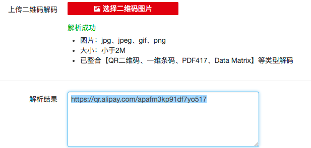
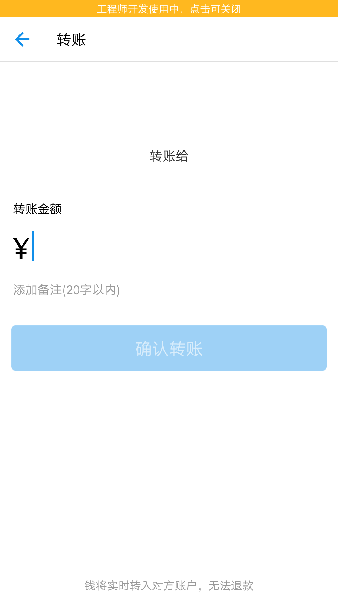
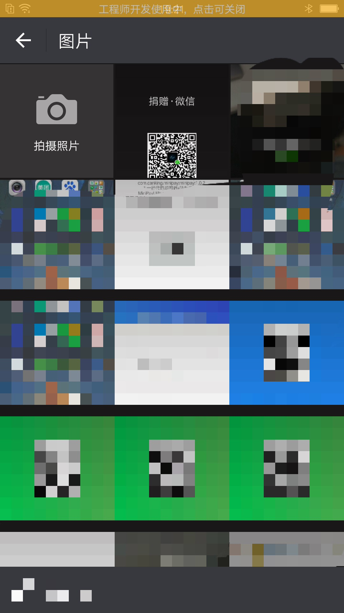

免sdk实现微信／支付宝转账打赏功能
安卓开发者都应该有一个属于自己的APP发布到市场，可以完善自己的技术站之外，加入广告，还可以有一份小收入。
但是这个年代，各家的应用市场是不欢迎带广告sdk的个人开发者应用的。还好我们可以用插件技术加入广告sdk，或者直接想一种方面实现打赏功能，让用户通过支付宝或微信转账到自己账户。

免sdk实现 微信／支付宝 转账打赏功能
安卓个人开发者如果如果想着App里实现支付打赏功能，嵌入sdk不说成本大外，基本是过不了市场审核的。那么我们可以利用有限资源，封装组件实现一个mini型的打赏功能。
一、支付宝转账分析
支付宝的转账和支付功能，都可以通过二维码打开相关的支付页面，并且用浏览器扫一扫后也是可以正常呼起正常支付页面的。那么我们简单分析下，支付宝的二维码整个跳转肯定不需要相关集成sdk的，那么到底什么样的数据格式可以做到的？
在支付宝个人信息页，找到 我的二维码，截图自己的支付宝二维码，识别下，得到以下信息：

可以看到支付宝的支付二维码就是一个普通的http url, 然后它主要信息就存在后缀字符： apafm3kp91df7yo517 里。
网上查询后，发现果然可以通过scheme去打开支付宝转账页面。参考

于是马上动手实现，验证scheme方式是有效的。剩下的就是怎么封装下方面调用。
二、微信转账分析
有了支付宝的转账经验，我们同样从二维码信息入手，发现微信随着版本更新，会有很多验证，直接用scheme调微信，会打开微信的一个空白网页。
分析
然后研究里下微信支付sdk，发现在接口调用的时间需要商户id，及appsecret等信息验证，这就意味这我们单纯的没有任何身份信息去调起微信支付是不可能的。
那么我们退而求其次，用引导方式帮用户直接打开微信扫一扫页面，文案引导用户从相册打开二维码，然后支付。
下一步，就是找到打开微信扫一扫的方法。
|
|
以上是网上推荐的方法，那么很不幸的是，这种方法估计在很早之前版本可以，但是现在这种方法是无效的。
那么是不是高版本就没有方法里呢？继续google，发现以下方法是可行的：
|
|
二维码微信相册保存
实现微信扫一扫跳转后，用户在从相册选择二维码时，怎么样才能一眼选出我们的目标转账二维码呢？
观察发现微信的二维码选择相册是按照时间顺序排序，那么只要我们的图片生成时间最新就可以排在第一位，每次新生成截图保存即可。
相关图片生成及相册保存逻辑如下：
|
|
这里涉及到屏幕截图保存逻辑，需要指定截图范围，保存后，还需要通知系统媒体数据库（微信图片的获取应该是读取的系统媒体库），保证数据更新。

三、封装sdk
既然可以实现免sdk的支付打赏功能，那么我们把这个功能封装成一个sdk，方便项目的植入。
那么本者 方便引入、简单使用，体验好等原则，实现了MiniPay开源项目。
项目把微信和支付宝集成了一个支付页面，点击背景可切换打赏途径。
只要一行代码即可引入自己项目
|
|
只要一行即个启动MiniPay打赏组件
|
|
代码完全开放，源码传送门，可以完全自定意逻辑。

——-——————
欢迎转载，请标明出处：常兴E站 www.canking.win